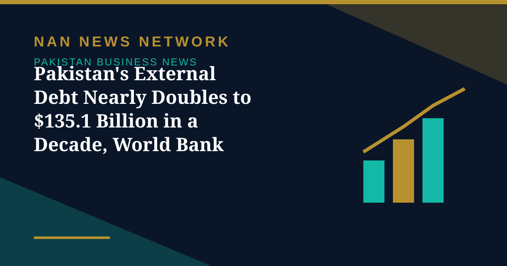

Pakistan's External Debt Nearly Doubles to $135.1 Billion in a Decade, World Bank Reports

Pakistan's total external debt almost doubled to $135.1 billion over the decade ending in 2025, according to the World Bank's International Debt Report 2026, released on Thursday, Dawn reported on November 6.
The decade in numbers
The report noted that Pakistan's external debt increased from $68.673 billion in 2015 to $135.107 billion in 2025, a rise of about $66.4 billion, or 96.7 percent, over the 10-year period. The stock stood at approximately $129.9 billion in 2024 before rising to $135.1 billion in 2025. The total included public and publicly guaranteed debt of $107.076 billion, private non-guaranteed debt of $17.58 billion and short-term debt of $10.45 billion. Pakistan's external debt was equivalent to around 34 percent of gross national income in 2025, according to the World Bank data, while debt servicing consumed 33 percent of the country's export earnings, Dunya News reported.
Who Pakistan owes
China was Pakistan's largest individual creditor, with $22.4 billion outstanding, followed by the World Bank with $19.2 billion and the Asian Development Bank with $16.83 billion. The report put the average maturity of loans from official creditors at 16 years, with a four-year grace period and an average interest rate of 3.6 percent. The figures refer to the terms of new borrowing commitments made during 2025 rather than the terms attached to Pakistan's entire outstanding external debt stock.
A global picture
The World Bank's report also showed that external debt across developing economies climbed 5.5 percent to a record $9.4 trillion as bond issues rebounded, the US dollar weakened and investors again showed greater willingness to lend. For Pakistan, the decade of doubling debt sets the context for every budget debate ahead: the stock has grown far faster than the economy's ability to service it from export earnings, and the terms of new borrowing will matter as much as the totals.
Sources: Dawn, Dunya News, UrduPoint, November 6, 2026
More on Pakistan Business News
- PSX Snaps Four-Day Rally as KSE-100 Falls 1,493 Points to 173,887 on Profit-Taking
- PSX Closes at Record 175,380 as KSE-100 Gains 3,366 Points for a Second Day
- ABHI Microfinance Bank IPO Book-Building Opens Today, Bidding Runs November 5-6
- PSX Surges 3,995 Points to Close Above 172,000 on Geopolitical Optimism
- Pakistan Ranks 106th on 2026 Global Hunger Index as Report Questions Budget Priorities
- PSX Gains 1,454 Points to Close at 168,018 on Renewed Buying in Heavyweights
- Pakistan's First SPAC Deal Brings Solar Firm Ningbo Green Light Energy to the PSX
- PSX Recovers 155 Points to Close at 166,564 as Oil Prices Ease
- PSX in October: KSE-100 Fell 3,560 Points as War Fears and a Rate Hike Weighed
- Pakistan's Refineries Report 1,860% Profit Jump as War-Driven Margins Surge
- ABHI Microfinance Bank Plans Up to Rs3 Billion PSX IPO, Book-Building on November 5-6
- PSX Ends Four-Session Rally as Oil Surge Triggers Profit-Taking, Index Closes at 166,409
- Pakistan Cement Makers' Profits Rise 17% to Rs34.2 Billion in First Quarter of FY27
- Pakistan's Exports Rise 7.7% to $8.5 Billion but Trade Gap Widens in First Quarter
- SIFC Finalises 38 Projects Targeting $40 Billion in Investment, Senate Panel Told
- PSX Extends Recovery as KSE-100 Closes Above 167,000 on October 29
- Petrol, Diesel Prices Rise From October 29 as Government Revises Fuel Rates
- KSE-100 Gains 1,269 Points to Close Above 165,700
- Fauji Fertilizer's Nine-Month Profit Hits Rs71 Billion on Strong Urea Demand
- KSE-100 Climbs 1,428 Points to Close at 164,467 in Bullish Session
- Pakistan Signs $2.25 Billion Deal for Lithium Battery Gigafactory in Rawalpindi
- Gold Prices Rise by Rs1,400 per Tola in Pakistan on Monday
- Business Confidence Falls to 48 in October, State Bank Survey Shows
- Diesel Raised to Rs393.66 a Litre, Petrol Unchanged at Rs377.71
- FBR Activates Faceless Tax Audit System From October 15
- Pakistan-Iran Trade Disruption Puts $2.8 Billion Annual Trade at Stake